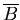
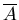

Unit 12 Exercises
1. Let A be a set. Show that x A = A x = .
2. How many different elements does A x B have if A has m elements and B has n elements?
3. Let A = {1, 2, 3, 4} and b = {0, 3, 5}. Find
4. What can you say about the sets A and B if the following are true?
a) A
 B = A
B = A
b) A - B = A
5. Let A and B be subsets of a universal set U. Show that A B if and only if  .